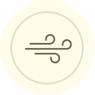

Alex Elle
“Pulse has transformed the way I experience presence”
Restorative Writing Teacher

Vex King
"Each calming Pulse Ring vibration gently helps you connect with yourself"
Author of Good Life, Good Vibes

Cory Allen
“Pulse is a must-own for anyone who wants to live more connected”
Author & Podcaster

Jon Prince
"Pulse reminds me to return back home to my authentic self"
Coach & Motivational Speaker

Katharina Minwegen
"It doesn't only calm my mind, it literary lowers my Pulse, every time it vibrates"
& Life Coach

Kelly Smith
“I love to take the Pulse Ring moments to repeat a mantra”
meditation teacher

Dr. Lara Hemeryck
"Every Pulse helps my biology shift into calm and that calm is what builds longevity."
Author of Living Young

Rimpal Narwan
“Pulse reminds me to pause. Stillness arrives, my senses sharpen”

To become calm and present, all you need is a 10-second micro-pause.
Vibration
Snaps you out of autopilot.

Practice
Gratitude exercise or deep breathing
Benefit
Scientifically proven: feel calm, feel present.
Pulse just might change your life.
The Pulse App

Set your vibration patterns in the Pulse App, choose your intention, and let Pulse’s gentle vibrations guide you throughout your day. No more interruptions from stressful on-screen push notifications or alerts.
Mindfulness Mode

Mindfulness works, but we often forget to practice it. Pulse is here to change that forever. It softly vibrates a few times a day to remind you to pause, breathe, relax, reflect, observe your thoughts, and reconnect with yourself.
Focus Mode

Activate and Focus. Pulse discreetly starts vibrating every 30 seconds, every minute or every 5th minute, depending on your settings. Use it to practice eating more slowly, speaking more calmly during your presentation, straightening your back, stopping nail-biting, avoiding endless scrolling, and much more.
Meditation Mode

For the first time ever, Pulse lets you enjoy a guided meditation without headphones. Simply close your eyes wherever you are and follow the gentle, pulsating micro-vibrations that guide the way.
Pulse Journeys™

We believe in learning from the best, which is why we’ve included exclusive courses from top experts across various fields of self-development. These week-long programs teach you how to respond to and use intentions when the ring vibrates. They also automatically set unique vibration patterns and schedules tailored to your needs.
Pulse Plus

Pulse+ is an optional subscription, where you get access to all the Pulse Journey video courses and content, also the ability to be double tapping the ring, social media addiction mode, family mode, couples mode, and so much more. You can read more about them in the app.
Benefits
Reduces stress
and anxiety
by helping you snap out of autopilot and overthinking.

Improves
focus
by helping you form new habits and stopping you from getting sidetracked.

Lets you be
present
by keeping you in the moment without getting lost in thought.
Calms you
effortlessly
by making mindfulness and meditation a regular part of your life.

Join a Community of Presence
The first smart wearable that doesn’t stress you with data and information.
Mindfulness and
wellbeing only
Pulse vibrations are completely separate from smartphone or other notifications, reserved only for your personal self-development.
Unintrusive and
discreet
It’s simply the most subtle smart wearable ever—effortlessly improving your wellbeing without tracking you.
Smart without
phone
Unlike regular meditation apps, it is made for digital detox. No screen time needed – Pulse works wherever you are.
Guiding and
encouraging
Set your personal intention, learn how to practice from experts in the Pulse App, and let the ring remind you to do the work, long after you’ve put your phone away.